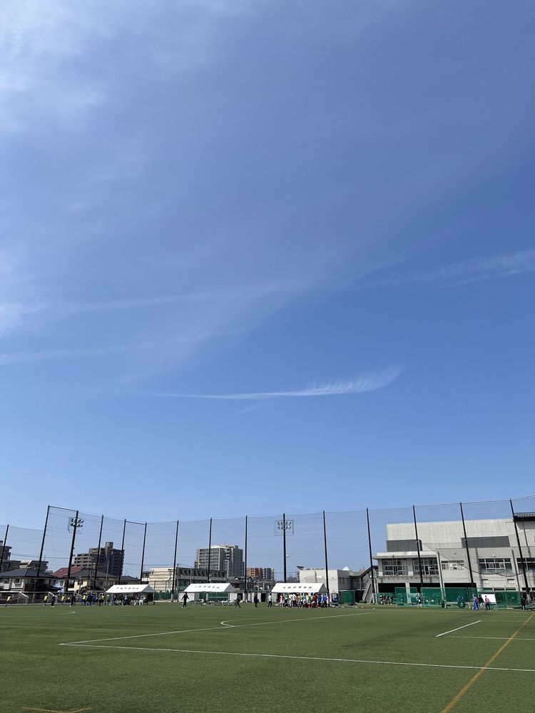

U14 金子來絆選手が新潟県トレセンに選出
U14所属の金子來絆選手（GK／アルビレックス新潟SS出身）が新潟県トレセンに選出されました。
U14所属の金子來絆選手（GK／アルビレックス新潟SS出身）が新潟県トレセンに選出されました。

U14所属の阿部一輝選手（MF／新津SSS出身）が新潟県トレセンに選出されました。

7月12日、北越高校で行われた第4節でFC.LAZO 2ndに6-0で勝利しました。
地域に根ざしたクラブ運営を行い、サッカースキルの向上はもとより、困難に負けない根っこ〔RADIX〕を育む。 中学生年代はU13・U14・U15の3カテゴリーで一貫指導を行っています。
中学1年生
基本動作・基本スキル（止める／蹴る／運ぶ）の習得を土台に、中学年代のサッカーへ移行していくカテゴリーです。
中学2年生
認知・判断の質を高め、個人戦術とチーム戦術を結びつけていくカテゴリー。県トレセンにも選手を輩出しています。
中学3年生
県リーグを主戦場に、勝負にこだわりながら次のステージ（高校年代）へ送り出す最終カテゴリーです。
| 活動拠点 | 北越高校（人工芝） |
| カテゴリー | U13・U14・U15 |
| スクール | U10・U12 |
※ 入団条件・費用の詳細は体験会またはお問い合わせにてご案内します。
サッカーが上手くなりたい小学生のためのスクールです。所属チームは問いません。基礎技術を伸ばしたい選手から、本格的に上を目指したい選手まで、どなたでもご参加いただけます。
※ 練習を月3回としているのは、ジュニア期のオーバーワークを避けるためです。適切な休養と他の活動の時間を確保し、心身の健やかな成長を最優先しています。
U15サッカーリーグ2026 新潟県リーグ3部Aグループ
2026 NiCY U-15選手権（予選リーグ・順位トーナメント）
※ 主な結果を抜粋して掲載しています。

日本サッカー協会公認B級指導者ライセンス
日本サッカー協会公認4級審判員
JFAスポーツマネージャー資格Grade2

日本サッカー協会公認B級指導者ライセンス
日本サッカー協会公認キッズリーダー
日本サッカー協会公認4級審判員

日本サッカー協会A級ジェネラル指導者ライセンス

日本サッカー協会公認A級ジェネラルコーチ指導者ライセンス
日本サッカー協会公認C級指導者ライセンス
日本サッカー協会公認フィジカルフィットネスC級指導者ライセンス
日本サッカー協会公認キッズリーダー
中学・高校教諭一種免許（保健体育）

日本サッカー協会公認C級指導者ライセンス
日本サッカー協会公認4級審判員
NSCA-CPT
| 日 | 月 | 火 | 水 | 木 | 金 | 土 |
|---|
※ 予定はsgrum公式カレンダーと自動同期しています。変更される場合がありますので、最新情報はSgrumアプリをご確認ください。会場：北越高校（人工芝）ほか
現小学6年生を対象に、U13の練習に参加できる体験会を開催しています。 GKコーチが常駐していますので、GK希望の方もぜひご参加ください。
北越ホール下でスタッフが待機しています。
参加上の注意・クラブ説明・質疑応答。できる限り選手・保護者そろってご参加ください。
U13の練習に参加していただきます（21:00終了予定）。